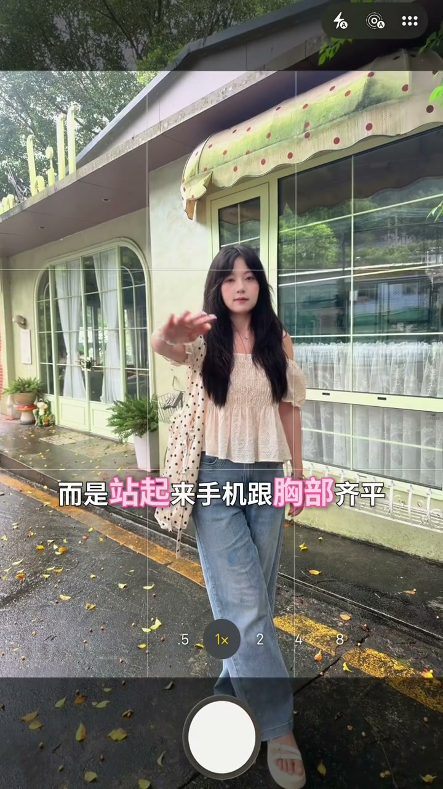
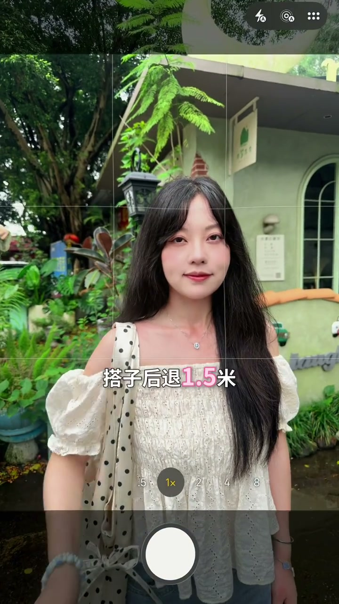
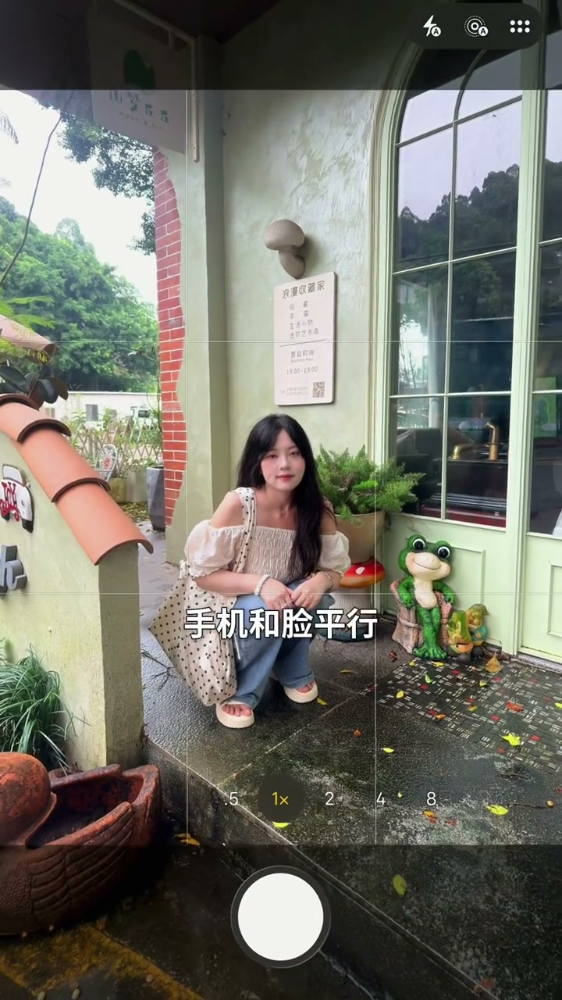

内容要点
玲玲用一只“鸭子”（辅助人物/道具）快速演示了四种万能拍照构图技巧，覆盖全身照、半身照、蹲姿和坐姿。每种构图都给出了手机高度、距离、变焦倍数和人物在取景框中的具体位置，即便没有摄影基础也能立刻上手。
知识结构
站起来拍，手机与胸部齐平，人物后退两米放在取景框中下两格，避免仰拍造成比例失调。
手机镜头与鼻子齐平，后退1.5米，放大1.5倍，微微外翻15度，眼睛卡在取景框上面一条线。
拍摄者也要蹲下，手机与脸平行，放大1.5倍，侧身对镜头，头顶卡在取景框上面一条线。
拍摄者走到侧面，后退一米，让人物在画面中形成对角线，增加画面动感。
四个插图的共同规律：手机高度对齐被摄者关键部位、保持一定后退距离、利用取景框网格线定位。记住这三条，任何姿势都能套用。
一、全身照：不要仰拍，手机与胸齐平
[00:00 → 14:72]玲玲开场就纠正了一个常见错误：拍全身照不是蹲下去仰拍，而是应该站起来。手机高度与胸部齐平，让被拍摄的人后退大约两米，然后把人物放在取景框的中下两格。这个机位高度能避免仰拍带来的头大身小比例失调，人物居中偏下的位置也最符合视觉习惯。

二、半身照：手机对齐鼻子，1.5倍变焦
[16:16 → 24:92]半身照有一个关键细节：手机镜头要和被拍者的鼻子齐平。距离缩短到1.5米，然后把画面放大到1.5倍，手机再微微向外翻15度。最后的构图标准是：眼睛刚好卡在取景框的上面一条线上。玲玲强调这个“外翻15度”的小动作能让人物看起来更自然，不会显得僵硬。

三、蹲姿：拍摄者也蹲下，手机平行脸部
[26:36 → 34:24]拍蹲姿的时候，第一条铁律是拍摄者也要蹲下。如果站着从上往下拍，画面立刻垮掉。蹲下后手机和脸保持平行，同样放大到1.5倍，被拍的人侧身对着镜头，头顶卡在取景框的上面一条线。这个机位能让蹲姿看起来挺拔、不蜷缩，腰线也更清晰。

四、坐姿：走到侧面形成对角线
[35:44 → 42:24]拍坐姿的秘诀不是正对镜头，而是让被拍的人走到侧面，再后退一米。这样人物在画面中自然形成一条对角线，比正面端坐更有层次感和动感。玲玲最后笑着说“快跟玲玲学起来吧”，把四种构图法串成了一分钟就能记住的口诀。